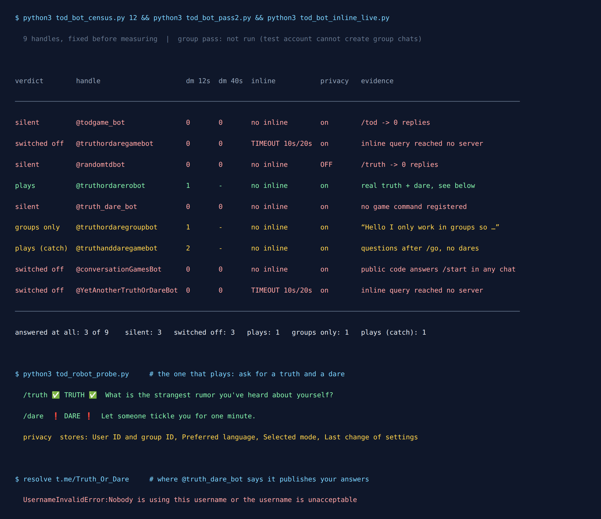

Telegram Truth or Dare Bot: I Tested 9, Only 3 Answer
Every directory page for a Telegram Truth or Dare bot says some version of the same thing: “Compatible with groups!” A few add that it will spice up your chat. None of them say whether the bot still answers.
That is the only question that matters at nine in the evening with six people in a group chat waiting for someone to go first. So on 11 September 2026 I took every Truth or Dare handle that three web searches turned up that night and sent each one a message.
Three of the nine answered. The handle listed by the most directories never said a word.

Where the nine came from
Picking nine bots I expected to fail would prove nothing, so I fixed the set before measuring anything and wrote down where each handle came from:
- Bot directories:
@todgame_bot(listed on three of them),@truthordarerobot,@truth_dare_bot,@randomtdbot,@truthordaregroupbot. - Bare Telegram links that came up in search:
@truthordaregamebot,@truthanddaregamebot. - Open source:
@conversationGamesBot, named in the README of its own GitHub repository. - A search engine’s own summary of “party game bots”:
@YetAnotherTruthOrDareBot.
All nine resolve. None of the usernames is empty, which is already better than the download bots I tested last week, where the most-recommended handle no longer existed.
What I could test, and what I could not
Truth or Dare is a group game, and the honest thing is to say up front that I did not play it in a group. My test account is restricted from creating group chats, and I was not going to drop nine strangers’ bots into somebody else’s group to find out. So this is not a review of what a round feels like with friends.
What I could do turned out to be enough to sort the nine, because a bot whose server is switched off is switched off everywhere. Four checks:
- Private chat.
/start, then the bot’s own game command taken from the list it registered with Telegram, never guessed. Silence at 12 seconds got a second try at 40 seconds before it counted. - Inline query. Telegram passes an inline query straight to the bot’s server and waits. A running server answers. A dead one times out.
- The bot’s account flags. Telegram publishes two per bot on the user object: whether it can be added to groups, and whether it “can see all messages in groups”.
- Source code, where it is public.
Result 1: three are switched off, and it can be proven
@truthordaregamebot and @YetAnotherTruthOrDareBot both registered inline mode, which gave me a clean control. I sent each an empty inline query and one for “truth”. Both timed out, at 10 seconds and again at 20. Telegram forwarded the question and nobody was there to answer it. Neither replied in private chat either, at 12 seconds or at 40.
@conversationGamesBot is open source, which settles it a different way. Its entry file registers a handler with bot.start(showStart) and no check on chat type, so the program answers /start in any chat it can see, private included. I got nothing at 40 seconds, and nothing for its own /question command. The code says it would reply if it were running. The repository’s last commit is from May 2025.
That is the failure nobody warns you about. A switched-off bot keeps its name, its profile picture and its command menu, and Telegram delivers your message to it with the usual ticks. From the chat window it looks exactly like a bot that is thinking.
Result 2: three more never reply, and I cannot prove why
@todgame_bot, @randomtdbot and @truth_dare_bot said nothing at 12 seconds, nothing at 40, and nothing to their own /tod or /truth commands. None of them has inline mode or public code, so I have no second test that could separate “switched off” from “ignores private chats on purpose”. I am calling them silent, not dead.
Two details are worth knowing anyway.
@todgame_bot is the one listed on three directories, with the cheerful “Compatible with groups!” description. It is also the one I would bet on being gone, because a group bot that does not answer /start in private is unusual. Even the one bot in this set that refuses private chats still says so when you message it.
@truth_dare_bot describes itself like this, spelling included:
“I Will Ask You To Answer Me Truthfully Or Do Some Works And Share It With Me. I Will Share Yur Answers In Twitter And Also In Channel: Telegram.Me/Truth_Or_Dare !”
So the pitch is that your truths get published. The channel it names does not exist any more: Telegram answers “Nobody is using this username”. It is hard to know which is worse, a bot that posts your answers or one that promises to and cannot.
Result 3: two actually play, and they are not the same game
@truthordarerobot is the one I would use. /start gets a short greeting and an “Add me to a group” button. Its help screen lists four commands, /truth, /dare, /mode [classic|hot] and /lang [en|it], and they work in private too:
✅ TRUTH ✅ What is the strangest rumor you’ve heard about yourself?
❗️ DARE ❗️ Let someone tickle you for one minute.
Each prompt comes with an “Another One” button. The default mode is party-safe, the hot mode is opt-in, and the bot has a privacy screen that says what it keeps: your user ID, the group ID, your language, the mode you picked and when you last changed a setting. That is about the minimum a group bot can store and still work, and it is the only bot of the nine that told me.
@truthanddaregamebot also works, but read the small print. It is built on Manybot, a bot builder, and its first message is followed by “Want to create your own bot? Go to @Manybot” and “Use /off to pause your subscription”. Starting it subscribes you to its broadcasts. After /startgame and /go it returned two prompts:
What is the most adventurous thing you’d want someone to do to you?
What would you do if you and your partner were stuck in a room for 24 hours with no lights?
Both were truths, both came with no truth-or-dare choice, and both are couples-flavoured. That is fine if it is what you want, but it is not what you want to fire off in a group that includes your cousin.
The one that only works in groups
@truthordaregroupbot answered /start and its own /startgame with the same line: “Hello I only work in groups so please add me in one”, plus a button that opens Telegram’s add-to-group screen. It is alive, and its command list is the most complete of the nine: /joingame, /nextquest, /leavegame, /endgame, even /add_dare for your own dares. I could not test a round, for the reason above, so I am not going to guess how good it is. What I can say is that its description ends with a “business inquiries” link into a different bot, which tells you how the operator pays for the server.
| Handle | Verdict | What actually happened |
|---|---|---|
@truthordarerobot | Plays | Real truth and dare on request, classic and hot modes, a plain privacy policy. |
@truthanddaregamebot | Plays, with a catch | Two couples-flavoured truths, no dares. Subscribes you to broadcasts. |
@truthordaregroupbot | Groups only | “I only work in groups.” Alive, not played. |
@todgame_bot | Silent | Listed by three directories. Nothing at 40 s, nothing to /tod. |
@randomtdbot | Silent | Nothing to /start or /truth. Privacy mode off. |
@truth_dare_bot | Silent | Promises to publish your answers to a channel that no longer exists. |
@truthordaregamebot | Switched off | Inline query times out at 10 s and 20 s. Silent in private. |
@YetAnotherTruthOrDareBot | Switched off | Inline query times out at 10 s and 20 s. Silent in private. |
@conversationGamesBot | Switched off | Its public code answers /start in any chat. Got nothing. |
The privacy question no directory mentions
A Truth or Dare round is a group of friends typing things they would not type anywhere else. So it is worth knowing what a bot can read once you add it.
By default, very little. Telegram bots run in privacy mode, where in a group they only receive commands meant for them, replies to their own messages and a few service events. Telegram’s documentation is explicit that privacy mode is “enabled by default for all bots, except bots that were added to a group as admins”, and that admin bots “always receive all messages”.
A developer can switch privacy mode off, and when they do, Telegram marks the account. I read that flag for all nine. Eight keep privacy mode on. @randomtdbot has it off, which means that if it were running and you added it to your group, it would receive every message sent there, including all the answers. It is also one of the three that never replied to me, so the practical risk today is low. The broader point holds, though, and it is the one I wrote about in what “anonymous” bots can see: what a bot receives is decided by flags you can check, not by its description.
How I would pick one tonight
- Message it in private first. If
/startgets nothing within about fifteen seconds, move on. Six of the nine failed right there, and none of them was thinking. - Ask for one prompt before you add it.
/truthin private tells you what tone the default mode has. That is how I found out one bot defaults to couples’ questions. - Read the first message for a subscription. “Use /off to pause your subscription” means you have joined a broadcast list.
- Do not make it an admin. Privacy mode only protects you while it is not one.
- Have a fallback that needs no bot. A group that expected Truth or Dare at nine does not want to watch someone troubleshoot a server at five past.
Want Truth or Dare that cannot go offline?
The Telegram Party Pack is 255 group-chat prompts, Truth or Dare and Never Have I Ever among them, with ready-made polls. No bot to add, no stranger reading the answers, nothing that can go quiet halfway through a round.
Get the pack — $9.99 Or start with the free party games list.Why the lists keep getting this wrong
This is the fourth time I have run the same exercise in this corner of Telegram, after quiz bots, download bots and anonymous chat bots. The shape has not changed: a set of confidently listed handles, a minority that do what they say, and a long tail that looks alive and is not.
Truth or Dare makes it especially easy to miss. A directory entry is a name, a picture and a description, and all three outlive the server by years. A dead bot keeps its command menu, so /truth still autocompletes as you type it. Nothing in the chat window tells you there is no program at the other end until your message goes unanswered.
If you are planning the evening rather than picking a bot, the game night guide covers the chat mechanics that break first. Fifteen seconds of sending /start beats any directory, this page included, and the date at the top is there because some of these verdicts will be out of date by spring.